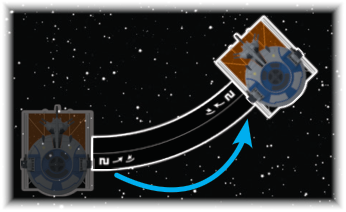
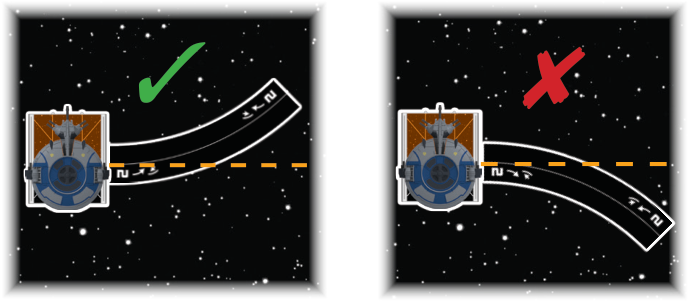
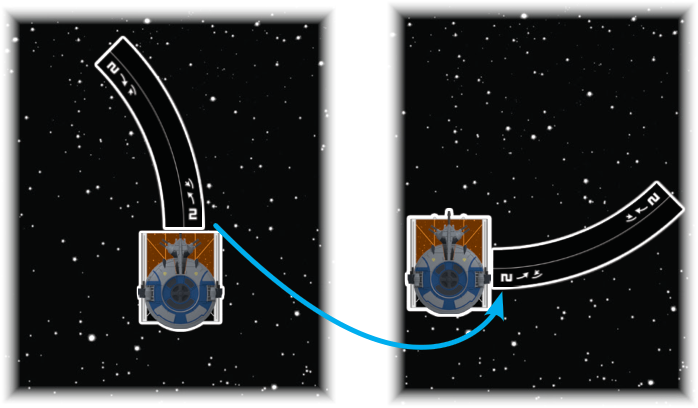

SIDESLIP
A sideslip is an advanced maneuver using a turn ( or ) or bank ( or ) template. A sideslip is executed by performing the following steps:

A [2 ] Sideslip
-
Place the narrow end of the template flush with the ship's side.
-
For a left ( or ) sideslip, place the template on the right side of the ship.
-
For a right ( or ) sideslip, place it on the left side of the ship.
Align the center line of the template to the center hashmark of the base. The other end of the template must be in the ship's .
-
-
Pick the ship up and place it at the other end of the template. Align the center hashmark on the opposite side of the ship to the center line of the template.

Correct [2 ] Sideslip
Incorrect [2 ] Sideslip
Additionally:
-
A sideslip is executed by placing the maneuver template in the same orientation that it would be placed in front of the ship, but placing it at the center line of the ship instead. This means that a sideslip that moves a ship to the right is dialed in for the left maneuver and uses the left ( or ) template, and vice-versa.
-
If the ship cannot fully execute a sideslip, it partially executes that maneuver using the left/right center line of the ship base (instead of the front/rear center line of the ship base, as it would normally) to determine its final position.

[2 ] executed as a bank
[2 ] executed as a sideslip
The sideslip changes the placement of the template, but the template's is not flipped over to the opposite direction.